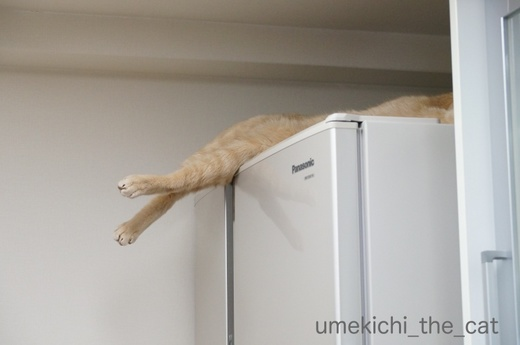
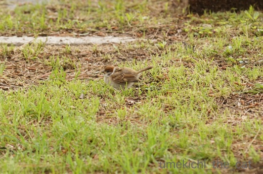
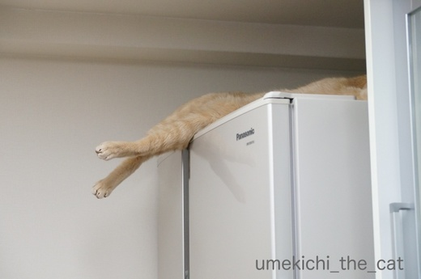
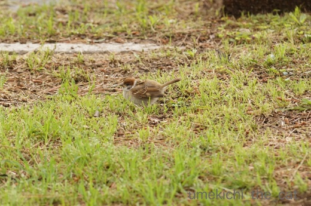

放熱の決め手はあし？ [梅吉]
蒸し蒸しと暑い日が何日か続きましたねー。
かと思えば夜寒いくらいの日もあり。
一転今日はカラリと過ごしやすい。
気象の変化に対応するのが大変ですw

蒸し蒸しと暑かった日（氷遊びをした日でもあります）
梅吉さんの寝場所が変わりました。
このキッチンカウンターに寝るようになると夏だなって感じます。
風の通り道であり板のひんやりした感覚も楽しめる快適な場所のようですよ＾＾

この場所ではあしを投げ出すのがお約束です。
不安定なんじゃないか、と思うのですがそうでもないらしいw
通るたびにあしをにぎにぎしちゃいますＯ(≧▽≦)Ｏ
冷蔵庫に肉球をくっつけるのも暑い時にしか見られないポーズです。
壁走りならぬ冷蔵庫走り（*>艸<)
大事な肉球、クールダウンしなきゃね。

こちらは前あしだけを冷蔵庫にタッチするスタイル。

この後ろあちになんの意味があるのかは不明ですが
すっごい萌えポイントーーーー！！！！

冷蔵庫の上は（寒い時期は快適ですが）暑いけど
好きすぎて上がらずにはいられないのでしょう。
で、あしをこのように突き出して温度調節している？？？
キッチンにはいったら突然視界にあしがにょーんと見えて思わず「うわっ！！」と声が出ました (^▽^;)
梅吉はあまりヘソ天はしないのですがだらしなーくあしを投げ出していることがとっても多いです。
梅吉なりの涼の取り方なんでしょうねぇ・・・
 ↑ガブッと一押し↑
↑ガブッと一押し↑
週末は浜寺公園にバラの写真を撮りに行って来ました！
そう！！カメラを持って行きました＾＾
が、バラよりも今年初物のプルプル写真からいきますよー。
右上の方がプルプルです。
プルプル、子すずめが母すずめに餌をねだる時に羽をプルプル震わせるので
我が家では子すずめをプルプルと読んでおります。
（我が家のベランダでのプルプルの様子 集団でご来店の様子）
最近はベランダにお米を撒かなくなったので
（梅吉がスズメさんのうんPの上でくるんくりんするんですよw )
スズメさんとはすっかり疎遠になってしまって・・・
今年は諦めていたのですが公園で会えました！

（子ス）なにー？
真っ黒いビーズみたいな目でこっち見てます![[黒ハート]](https://blog.ss-blog.jp/_images_e/136.gif)
お弁当のご飯をふるまって差し上げました。
こちらはおっとが撮って来たつばめのプルプル。
（子ツ）おっちゃん ごはんーー！！
＊ソネブロの常時SSL化が延期になりましたね。ソネブロあるある？
記事の内部リンクがぶっ壊れた感じのページに飛ぶかもしれませんが
（とっても不安定）
見られないことはないのでリンクを貼っておきましたwww
宜しかったら見てくださいませ＾＾
かと思えば夜寒いくらいの日もあり。
一転今日はカラリと過ごしやすい。
気象の変化に対応するのが大変ですw

蒸し蒸しと暑かった日（氷遊びをした日でもあります）
梅吉さんの寝場所が変わりました。
このキッチンカウンターに寝るようになると夏だなって感じます。
風の通り道であり板のひんやりした感覚も楽しめる快適な場所のようですよ＾＾

この場所ではあしを投げ出すのがお約束です。
不安定なんじゃないか、と思うのですがそうでもないらしいw
通るたびにあしをにぎにぎしちゃいますＯ(≧▽≦)Ｏ
冷蔵庫に肉球をくっつけるのも暑い時にしか見られないポーズです。
壁走りならぬ冷蔵庫走り（*>艸<)
大事な肉球、クールダウンしなきゃね。

こちらは前あしだけを冷蔵庫にタッチするスタイル。

この後ろあちになんの意味があるのかは不明ですが
すっごい萌えポイントーーーー！！！！

冷蔵庫の上は（寒い時期は快適ですが）暑いけど
好きすぎて上がらずにはいられないのでしょう。
で、あしをこのように突き出して温度調節している？？？
キッチンにはいったら突然視界にあしがにょーんと見えて思わず「うわっ！！」と声が出ました (^▽^;)
梅吉はあまりヘソ天はしないのですがだらしなーくあしを投げ出していることがとっても多いです。
梅吉なりの涼の取り方なんでしょうねぇ・・・
週末は浜寺公園にバラの写真を撮りに行って来ました！
そう！！カメラを持って行きました＾＾
が、バラよりも今年初物のプルプル写真からいきますよー。
右上の方がプルプルです。
プルプル、子すずめが母すずめに餌をねだる時に羽をプルプル震わせるので
我が家では子すずめをプルプルと読んでおります。
（我が家のベランダでのプルプルの様子 集団でご来店の様子）
最近はベランダにお米を撒かなくなったので
（梅吉がスズメさんのうんPの上でくるんくりんするんですよw )
スズメさんとはすっかり疎遠になってしまって・・・
今年は諦めていたのですが公園で会えました！

（子ス）なにー？
真っ黒いビーズみたいな目でこっち見てます
お弁当のご飯をふるまって差し上げました。
こちらはおっとが撮って来たつばめのプルプル。
（子ツ）おっちゃん ごはんーー！！
＊ソネブロの常時SSL化が延期になりましたね。ソネブロあるある？
記事の内部リンクがぶっ壊れた感じのページに飛ぶかもしれませんが
（とっても不安定）
見られないことはないのでリンクを貼っておきましたwww
宜しかったら見てくださいませ＾＾

カフェオレ色の梅吉

梅吉 2023年8月10日 永眠


梅吉と出会った譲渡会

犬猫の理由なき殺処分ゼロ
妄想広告
UMEKICHI 光

爆発的に早い！
時々攻撃的！
Thanks to Mr.Boss365
爆発的に早い！
時々攻撃的！
Thanks to Mr.Boss365

あしフェチでらしたんですねぇ(^_^;)
梅吉様は魅力的な尻尾してますが(^^)
「プルプル」しているからでしょうか、
子スズメちゃんの身体が大きい(^_^;)
ひよ隊長、やはり距離があるかと^_^;
子ツバメさんのお口がハート(〃'∇'〃)
by middrinn (2018-05-21 12:34)
だらりと脱力したにゃんこの後ろ足って萌えますよねぇ(^O^)
にぎにぎしたくて堪りませんが、私がにぎろうとすると必ず察知されるので
にゃんずとかみさんに「触るな！」と怒られます(T_T)
梅吉さん、ヘソ天も放熱できて気持ち良いらしいですよぉ(^-^)
by ニッキー (2018-05-21 15:29)
やっぱり内部リンク不安定なんですか？
ここんところ、ずれたページに行かされたり、他にも変なことが
多いのですが、自分とこだけかと思ってました。
梅吉さん、さすがに真夏の冷蔵庫は無理ですよね^^？
by nachic (2018-05-21 15:40)
ダランと伸びたアンヨも
ピーンと伸ばしたおてても可愛過ぎです(#^.^#)
通りかかるたびにニギニギしちゃう気持ちが
分かりますが・・・梅吉さんは逃げないのですか？？
by きぃ (2018-05-21 15:52)
・・くぅ～。わかります！私は意味もなく、毎日お兄と「握手しよ！」って外交してます。酔っぱらうと、「くちづけを・・・」求めちゃってます・・・もちろん、お尻の香りも・・・頭の後ろも嗅ぎます・・・猫香道♡
スズメさん！ツバメさん！たまりませぬね！来てくれたことに感謝！！農薬もうやめて～、なのです。
by Ginger (2018-05-21 16:11)
こんにちは。
梅吉！！今日も可愛いぞ！！癒されます！！
足の投げ出しは、一瞬ドキと心配しちゃうぞ！！
暑い時は、梅吉も一緒にプールに行くだにゃ！？by すもも(=^･ｪ･^=)
by Boss365 (2018-05-21 16:38)
梅吉さん、カウンターで熟睡の様子ですね。
投げ出しあんよも可愛いです。
自分に置き換えて、高い位置で足が出ていたら落ち着かないなぁと思うと、
梅吉さんは怖くなくてすごいと思いましたよ。
冷蔵庫の上に梅吉さんの足が見えたところが可笑しいですね。
「うわっ！！」と、想像できました。
プルプル可愛いですね。
私はスズメのプルプルを確認できません。
みんな同じに見えてしまいます（笑）
ツバメのプルプルはわかりやすい（笑）
by kiki (2018-05-21 16:41)
足フェチ～分かる～てろ～んって垂れてる足可愛いですよね(*^。^*)
あち萌えます♪
by palpal (2018-05-21 17:54)
梅吉さんも暑いのは苦手みたいですね！
ヒンヤリしたところで涼んでいますね(^^)
by ma2ma2 (2018-05-21 18:08)
梅吉さんはその日の快適な場所を熟知しているようですね(^^)
自分は自宅内での快適な場所が少なくなってきている感じです(^^;)
by kou (2018-05-21 19:01)
これは私もにぎにぎしたくなっちゃいます。足先クリンも可愛くてたまりませんね~。
by zombiekong (2018-05-21 19:06)
梅吉さん、字が書けたら、
｢あんよにぎにぎ1回につきカリカリ10粒｣とか
書いちゃったりして(^^;
子ス、最寄り駅にも毎年くるのですが、
今年は一人っ子みたい…。なんだか寂しいです。
時間差で生まれるのかなぁ？
by も〜 (2018-05-21 20:34)
梅吉さん、気持ちよさそうですねえ～。
涼しいところで、てろ～ん、って＾＾
猫さんの夏姿～壁際で肉球くっつける、足だけ風に当てる、あるあるですね。
かわいい‥
うしろあちの曲がり具合がキュートッ！
足先にぎにぎ、したくなりますよね～♪
by sana (2018-05-21 20:48)
てろ～んとはみ出した猫足、大好物です。
まず肉球の匂いをスンスン嗅いでからニギニギ♪
ま、この時点で我が家では蹴られるかパンチされるかで終了です^^;
梅吉さん、冷蔵庫の中はもっと涼しいで～(≧▽≦)
ウチの中で唯一こてつに侵入されていない場所かもしれません。
by ゆきち (2018-05-21 20:49)
梅吉さん、さりげなくアンヨ・アピール？^^;
こりゃ肉球触りたくなりますねー。
視界に突然のあし、ビックリするの分かる気がします。
スズメやツバメの雛プルプル！
元気に育って欲しいものです。^^)
by yes_hama (2018-05-21 21:23)
梅吉さんは足が長いのを自慢したいんです。
そして、ちぃさんに優しく触って欲しいんです。
絶対そうです。私にはわかります(^^)
by riverwalk (2018-05-21 23:31)
足つきだしは、「ここにいるぞ」アピールかもしれませんよ！？^^
母はこの、にょきっと足を出す様を
「アサリやってる」「シジミやってる」と言います。
プルプルスズメちゃん、かわいいですよね〜
by Ja-Kou66 (2018-05-22 00:26)
こういうのが出てたら、握るのが礼儀でしょうね。
我が家でもやってますよ＾＾
by ぽちの輔 (2018-05-22 06:37)
足だけがびよーんと出てるのをみて
ふと、犬神家の一族の映画を思い出した私(^_^;)
by よーちゃん (2018-05-22 08:21)
梅吉くんのあんよ可愛いすぎる～♪
これはにぎにぎせずにはいられませんｗついでにぱくっとね(≧▽≦)
うちはタラが甘えるとすぐにお腹をだすの。
足もピーンと伸ばしちゃって上から見るとラッコです。
子スズメちゃんと子ツバメちゃんのプルプルも一生懸命で可愛いね。
ちぃさんに見せてあげたくて、写真を撮って来てくれる旦那様も優しい(*^-^*)
by emi (2018-05-22 09:07)
梅吉君の冷蔵庫タッチ可愛いですねー^^
カウンターから足がこんなふうに出ていたら
わたしも通るたびにニギニギしちゃうわ。
シッポも触っちゃうーーーw
だらしない足の投げだし、これ脱力しててほんっと可愛いのよね♪
うちも寛ぐ場所が変わってきたよー。下書きには入ってるんだけど、まだ札幌帰省ネタなので、UPはしばらく先かな？(笑)
by リュカ (2018-05-22 20:31)
middrinnさん＞
全パーツフェチでーす( ´艸｀)
どこが一番？って聞かれると大変困りますw
尻尾は飼い主の顔を「ぺしぺし」叩く
大変魅力的なパーツですよ〜＾＾
子スズメは常にぼわっとまあるく膨らんで大きいです。
そして声もでっかいんですよ。
「ちゅんちゅん」じゃなくて「ぢゅん！ぢゅん！！」って感じです♡
大きく見せて外敵から身を守る？
まあるい＝かわいいで仲間から守ってもらおうとする？？
なんて考えてます。
ニッキーさん＞
気配を察知しますか！にゃんずさんやりますね！！
そういう点では梅吉はボケボケしているのかも。
触られて気付いて「むるっ！」とびっくりした声を出してますよ(^▽^;)
ヘソ天、幼い頃は（自分で）していたのですよー。（人力で作ることはできます）
またやって欲しいな！
nachicさん＞
内部リンクに飛ばなかったり飛んでもレイアウトがおかしくなっていたり
nice！アイコンがなかなか表示されなかったり
更新した記事がなかなか反映されなかったり、などなど・・・
最近イラっとすることが多いのですよ(-_-メ)
ブログで触れている方が見当たらないので
私も『私だけ』かと思っていましたw
常時SSL化にあたってまだ何か起こりそうな予感ですねー (^▽^;)
冷蔵庫の上、今後いつまで上がるのか乞うご期待！ですwww
きぃさん＞
うふふ♡
おててをピーンの時はお腹をわしわししちゃうんですよＯ(≧▽≦)Ｏ
意外かもしれませんが
わしわしもニギニギもいやがりも逃げもしません！
かまってちゃんですからね、梅吉は(^_－)☆
お腹ワシワシの時はガブ蹴りが付いて来ますけどーw
Gingerさん＞
あー、酔っぱらわなくても日常的に無理チューしてますよ ( ´艸｀)
猫香道、良いですね♡
肉球、お耳の中も素敵な香りですよねＯ(≧▽≦)Ｏ
Boss365さん＞
わーい♡すももさんにプールに誘われちゃった！？
すももさんのダイナマイトボディに梅吉きゅんきゅんですよ！
きっと！！(^_－)☆
梅吉、実はマイプールを持っているので
すももさんをお招きしちゃおうかしら( ´艸｀)
http://umekichi-the-cat.blog.so-net.ne.jp/2017-07-31
kikiさん＞
私の「うわっ！！」な気持ちを分かっていただけましたか＾＾
初めての光景だったのでびっくりしましたねぇ・・・
コメントしてくださった方もいましたが
力なく突き出た足は「八つ墓村」かと思いました(^▽^;)
スズメのプルプルはボワっとまあるく膨らんで
声が「ぢゅん！ぢゅん！！」と大きいので解りやすいかもです。
今度じっと見てみてくださいね＾＾
palpalさん＞
猫は全パーツがかわいいけど足は特にたまらないよねぇ・・・
ニオイも嗅げるしwww
ma2ma2さん＞
真夏は（梅吉の為に）エアコンつけっぱなしなので
今の時期が一番ツライかもしれません(^▽^;)
猫は涼しいところを見つけるのが上手いので
今は自力でがんばれって感じですwww
by ちぃ (2018-05-22 21:05)
ちゃーんと気持ちいい場所、わかってますね(^_-)-☆
あかりも、最近また「忍法かべ走り」を
始めました＾＾
季節が進んでいますね。
また、夏グッズを出さないといけないな～。
ついこの間、しまった気がするのに(￣▽￣)
by マーヤ (2018-05-23 00:20)
kouさん＞
毎日居場所が変わる梅吉ですが
時々によって梅吉なりの基準があるのでしょうね＾＾
夕方になると暑い日でも西日を浴びに行く謎の行動もあります(^▽^;)
kouさんも冷蔵庫の上、どうですかー！？
秘密基地っぽいかも ( ´艸｀)
zombiekongさん＞
にぎっちゃいますよね？ね？？
握らないと非礼になるそうですよ！！
下僕として礼を失しなくてよかったです(^_－)☆
も〜さん＞
よくお分かりですねーＯ(≧▽≦)Ｏ
字が書けたらそれしかないです！！
子ス、巣立つ前にカラスにさらわれたり（目撃しました）
危険がいっぱいです・・・
ウチに来てた子たちも（おそらく同じ個体）
一羽減り二羽減りして。
野生動物の世界は厳しいですね。。。
（雀はワンシーズンに２〜３回繁殖期があるそうですよ）
sanaさん＞
涼を取る、人間がにぎにぎして喜ぶ、などと
猫の足には重要な役割があるようですね！大活躍＾＾
香箱組んでいる時は
「きょうは あしの きゅうそくびや」なのかしら( ´艸｀)
ゆきちさん＞
ニオイも嗅ぎますー！！
キックorパンチが来るのではなかなかゆっくり楽しめませんね・・・
限られた時間内でどれだけこなせるかがカギになりそうw
梅吉は嫌がらないのですよー。
時には匂いを嗅いでる足をぎゅーんと伸ばして来るので
肉球が鼻の穴にスボッっと入り込んで
大変幸せな気分になれます（猫変態）
yes_hamaさん＞
自分の足が可愛いいのを意識しての行動かもしれませんね(*>艸<)
もしくは触って欲しいアピール！？
意外かもしれませんが足は触っても嫌がらないのですよ＾＾
あちこちで目にするいろんなぷるぷる、元気に育って欲しいです！
カラスだけはヒナのうちは親鳥が怖いので
さっさと大人になって欲しいです (^▽^;)
親鳥に襲われるんじゃないかとびくびくなんですw(経験者）
riverwalkさん＞
確かに！！足は長いです＾＾
おさわりに関しては私は梅吉の期待を裏切りませんよー( ´艸｀)
Ja-Kou66さん＞
「アサリorシジミやってる」！！
中身がでろ〜んと出ちゃってる感じですね(*>艸<)
触るとシュッと引いて行くのもそっくりですw
お米をあげなくてもプルプルがベランダにくるかも！
と思っていたのですが虫が良すぎたようで・・・
やっぱりギブアンドテイクの関係なんですよねー(꒦ິ⌑꒦ີ)
ぽちの輔さん＞
はっΣ(ﾟ◇ﾟ；)
必ずにぎにぎしていて良かった。
下僕として礼を失するところでしたw
よーちゃん＞
そうなんですー！
私も思いました「八つ墓村」(*>艸<)
「なんの祟りですかー？」と聞きながら
足をニギニギしておきましたw
emiさん＞
冷蔵庫の上は高すぎてぱくっとできなかったけど
キッチンカウンターの上にいた時はしておきましたよ＾＾
ぱくっ♡
はぁ〜(≧▽≦)ラッコちゃんになってくれるのですね！
おてては短くたたんで？いいなぁ。
あら、おっとへの高評価＾＾
コメント欄読んでるので喜んでますよ、きっと！！
りゅかさん＞
冷蔵庫タッチの時は必ず目線も送ってくるの。
何アピールなんだろうw
足としっぽはセットですよね！
一連の流れでしゅーっと触っちゃいます＾＾
だらしなく投げ出した足は触ると一瞬シュッと引くんだけど
その後ぎゅーんと伸びてきます。
その瞬間を狙って顔を近づけると
肉球がむぎゅっと顔に押し付けられて
時には肉球が鼻の穴に入ったりして幸せな気分になれますwww
（猫変態）
by ちぃ (2018-05-23 16:35)
マーヤさん＞
あかりちゃんも壁走りを！
みなにゃんが一斉にやり始めると
にゃんこは壁に肉球を押し付けて情報交換をしているんじゃないか？？？
なんて思っちゃいますwww
by ちぃ (2018-05-24 15:36)